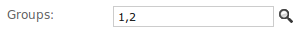

The Django admin site¶
One of the most powerful parts of Django is the automatic admin interface. It reads metadata in your model to provide a powerful and production-ready interface that content producers can immediately use to start adding content to the site. In this document, we discuss how to activate, use and customize Django’s admin interface.
Overview¶
There are seven steps in activating the Django admin site:
- Add
'django.contrib.admin'to yourINSTALLED_APPSsetting. - The admin has four dependencies -
django.contrib.auth,django.contrib.contenttypes,django.contrib.messagesanddjango.contrib.sessions. If these applications are not in yourINSTALLED_APPSlist, add them. - Add
django.contrib.messages.context_processors.messagestoTEMPLATE_CONTEXT_PROCESSORSas well asdjango.contrib.auth.middleware.AuthenticationMiddlewareanddjango.contrib.messages.middleware.MessageMiddlewaretoMIDDLEWARE_CLASSES. (These are all active by default, so you only need to do this if you’ve manually tweaked the settings.) - Determine which of your application’s models should be editable in the admin interface.
- For each of those models, optionally create a
ModelAdminclass that encapsulates the customized admin functionality and options for that particular model. - Instantiate an
AdminSiteand tell it about each of your models andModelAdminclasses. - Hook the
AdminSiteinstance into your URLconf.
After you’ve taken these steps, you’ll be able to use your Django admin site
by visiting the URL you hooked it into (/admin/, by default).
Other topics¶
See also
For information about serving the static files (images, JavaScript, and CSS) associated with the admin in production, see Serving files.
Having problems? Try FAQ: The admin.
ModelAdmin objects¶
-
class
ModelAdmin¶ The
ModelAdminclass is the representation of a model in the admin interface. These are stored in a file namedadmin.pyin your application. Let’s take a look at a very simple example of theModelAdmin:from django.contrib import admin from myproject.myapp.models import Author class AuthorAdmin(admin.ModelAdmin): pass admin.site.register(Author, AuthorAdmin)
Do you need a
ModelAdminobject at all?In the preceding example, the
ModelAdminclass doesn’t define any custom values (yet). As a result, the default admin interface will be provided. If you are happy with the default admin interface, you don’t need to define aModelAdminobject at all – you can register the model class without providing aModelAdmindescription. The preceding example could be simplified to:from django.contrib import admin from myproject.myapp.models import Author admin.site.register(Author)
ModelAdmin options¶
The ModelAdmin is very flexible. It has several options for dealing with
customizing the interface. All options are defined on the ModelAdmin
subclass:
class AuthorAdmin(admin.ModelAdmin):
date_hierarchy = 'pub_date'
-
ModelAdmin.actions¶ A list of actions to make available on the change list page. See Admin actions for details.
-
ModelAdmin.actions_on_top¶
-
ModelAdmin.actions_on_bottom¶ Controls where on the page the actions bar appears. By default, the admin changelist displays actions at the top of the page (
actions_on_top = True; actions_on_bottom = False).
-
ModelAdmin.actions_selection_counter¶ Controls whether a selection counter is displayed next to the action dropdown. By default, the admin changelist will display it (
actions_selection_counter = True).
-
ModelAdmin.date_hierarchy¶ Set
date_hierarchyto the name of aDateFieldorDateTimeFieldin your model, and the change list page will include a date-based drilldown navigation by that field.Example:
date_hierarchy = 'pub_date'
This will intelligently populate itself based on available data, e.g. if all the dates are in one month, it’ll show the day-level drill-down only.
-
ModelAdmin.exclude¶ This attribute, if given, should be a list of field names to exclude from the form.
For example, let’s consider the following model:
class Author(models.Model): name = models.CharField(max_length=100) title = models.CharField(max_length=3) birth_date = models.DateField(blank=True, null=True)
If you want a form for the
Authormodel that includes only thenameandtitlefields, you would specifyfieldsorexcludelike this:class AuthorAdmin(admin.ModelAdmin): fields = ('name', 'title') class AuthorAdmin(admin.ModelAdmin): exclude = ('birth_date',)
Since the Author model only has three fields,
name,title, andbirth_date, the forms resulting from the above declarations will contain exactly the same fields.
-
ModelAdmin.fields¶ If you need to achieve simple changes in the layout of fields in the forms of the “add” and “change” pages like only showing a subset of the available fields, modifying their order or grouping them in rows you can use the
fieldsoption (for more complex layout needs see thefieldsetsoption described in the next section). For example, you could define a simpler version of the admin form for thedjango.contrib.flatpages.models.FlatPagemodel as follows:class FlatPageAdmin(admin.ModelAdmin): fields = ('url', 'title', 'content')
In the above example, only the fields
url,titleandcontentwill be displayed, sequentially, in the form.fieldscan contain values defined inModelAdmin.readonly_fieldsto be displayed as read-only.The
fieldsoption, unlikelist_display, may only contain names of fields on the model or the form specified byform. It may contain callables only if they are listed inreadonly_fields.To display multiple fields on the same line, wrap those fields in their own tuple. In this example, the
urlandtitlefields will display on the same line and thecontentfield will be displayed below them in its own line:class FlatPageAdmin(admin.ModelAdmin): fields = (('url', 'title'), 'content')
Note
This
fieldsoption should not be confused with thefieldsdictionary key that is within thefieldsetsoption, as described in the next section.If neither
fieldsnorfieldsetsoptions are present, Django will default to displaying each field that isn’t anAutoFieldand haseditable=True, in a single fieldset, in the same order as the fields are defined in the model.
-
ModelAdmin.fieldsets¶ Set
fieldsetsto control the layout of admin “add” and “change” pages.fieldsetsis a list of two-tuples, in which each two-tuple represents a<fieldset>on the admin form page. (A<fieldset>is a “section” of the form.)The two-tuples are in the format
(name, field_options), wherenameis a string representing the title of the fieldset andfield_optionsis a dictionary of information about the fieldset, including a list of fields to be displayed in it.A full example, taken from the
django.contrib.flatpages.models.FlatPagemodel:class FlatPageAdmin(admin.ModelAdmin): fieldsets = ( (None, { 'fields': ('url', 'title', 'content', 'sites') }), ('Advanced options', { 'classes': ('collapse',), 'fields': ('enable_comments', 'registration_required', 'template_name') }), )
This results in an admin page that looks like:

If neither
fieldsetsnorfieldsoptions are present, Django will default to displaying each field that isn’t anAutoFieldand haseditable=True, in a single fieldset, in the same order as the fields are defined in the model.The
field_optionsdictionary can have the following keys:fieldsA tuple of field names to display in this fieldset. This key is required.
Example:
{ 'fields': ('first_name', 'last_name', 'address', 'city', 'state'), }
As with the
fieldsoption, to display multiple fields on the same line, wrap those fields in their own tuple. In this example, thefirst_nameandlast_namefields will display on the same line:{ 'fields': (('first_name', 'last_name'), 'address', 'city', 'state'), }
fieldscan contain values defined inreadonly_fieldsto be displayed as read-only.If you add the name of a callable to
fields, the same rule applies as with thefieldsoption: the callable must be listed inreadonly_fields.
classesA list containing extra CSS classes to apply to the fieldset.
Example:
{ 'classes': ['wide', 'extrapretty'], }
Two useful classes defined by the default admin site stylesheet are
collapseandwide. Fieldsets with thecollapsestyle will be initially collapsed in the admin and replaced with a small “click to expand” link. Fieldsets with thewidestyle will be given extra horizontal space.
descriptionA string of optional extra text to be displayed at the top of each fieldset, under the heading of the fieldset.
Note that this value is not HTML-escaped when it’s displayed in the admin interface. This lets you include HTML if you so desire. Alternatively you can use plain text and
django.utils.html.escape()to escape any HTML special characters.
-
ModelAdmin.filter_horizontal¶ By default, a
ManyToManyFieldis displayed in the admin site with a<select multiple>. However, multiple-select boxes can be difficult to use when selecting many items. Adding aManyToManyFieldto this list will instead use a nifty unobtrusive JavaScript “filter” interface that allows searching within the options. The unselected and selected options appear in two boxes side by side. Seefilter_verticalto use a vertical interface.
-
ModelAdmin.filter_vertical¶ Same as
filter_horizontal, but uses a vertical display of the filter interface with the box of unselected options appearing above the box of selected options.
-
ModelAdmin.form¶ By default a
ModelFormis dynamically created for your model. It is used to create the form presented on both the add/change pages. You can easily provide your ownModelFormto override any default form behavior on the add/change pages. Alternatively, you can customize the default form rather than specifying an entirely new one by using theModelAdmin.get_form()method.For an example see the section Adding custom validation to the admin.
Note
If your
ModelFormandModelAdminboth define anexcludeoption thenModelAdmintakes precedence:class PersonForm(forms.ModelForm): class Meta: model = Person exclude = ['name'] class PersonAdmin(admin.ModelAdmin): exclude = ['age'] form = PersonForm
In the above example, the “age” field will be excluded but the “name” field will be included in the generated form.
-
ModelAdmin.formfield_overrides¶ This provides a quick-and-dirty way to override some of the
Fieldoptions for use in the admin.formfield_overridesis a dictionary mapping a field class to a dict of arguments to pass to the field at construction time.Since that’s a bit abstract, let’s look at a concrete example. The most common use of
formfield_overridesis to add a custom widget for a certain type of field. So, imagine we’ve written aRichTextEditorWidgetthat we’d like to use for large text fields instead of the default<textarea>. Here’s how we’d do that:from django.db import models from django.contrib import admin # Import our custom widget and our model from where they're defined from myapp.widgets import RichTextEditorWidget from myapp.models import MyModel class MyModelAdmin(admin.ModelAdmin): formfield_overrides = { models.TextField: {'widget': RichTextEditorWidget}, }
Note that the key in the dictionary is the actual field class, not a string. The value is another dictionary; these arguments will be passed to the form field’s
__init__()method. See The Forms API for details.Warning
If you want to use a custom widget with a relation field (i.e.
ForeignKeyorManyToManyField), make sure you haven’t included that field’s name inraw_id_fieldsorradio_fields.formfield_overrideswon’t let you change the widget on relation fields that haveraw_id_fieldsorradio_fieldsset. That’s becauseraw_id_fieldsandradio_fieldsimply custom widgets of their own.
-
ModelAdmin.inlines¶ See
InlineModelAdminobjects below as well asModelAdmin.get_formsets().
-
ModelAdmin.list_display¶ Set
list_displayto control which fields are displayed on the change list page of the admin.Example:
list_display = ('first_name', 'last_name')
If you don’t set
list_display, the admin site will display a single column that displays the__unicode__()representation of each object.You have four possible values that can be used in
list_display:A field of the model. For example:
class PersonAdmin(admin.ModelAdmin): list_display = ('first_name', 'last_name')
A callable that accepts one parameter for the model instance. For example:
def upper_case_name(obj): return ("%s %s" % (obj.first_name, obj.last_name)).upper() upper_case_name.short_description = 'Name' class PersonAdmin(admin.ModelAdmin): list_display = (upper_case_name,)
A string representing an attribute on the
ModelAdmin. This behaves same as the callable. For example:class PersonAdmin(admin.ModelAdmin): list_display = ('upper_case_name',) def upper_case_name(self, obj): return ("%s %s" % (obj.first_name, obj.last_name)).upper() upper_case_name.short_description = 'Name'
A string representing an attribute on the model. This behaves almost the same as the callable, but
selfin this context is the model instance. Here’s a full model example:class Person(models.Model): name = models.CharField(max_length=50) birthday = models.DateField() def decade_born_in(self): return self.birthday.strftime('%Y')[:3] + "0's" decade_born_in.short_description = 'Birth decade' class PersonAdmin(admin.ModelAdmin): list_display = ('name', 'decade_born_in')
A few special cases to note about
list_display:If the field is a
ForeignKey, Django will display the__unicode__()of the related object.ManyToManyFieldfields aren’t supported, because that would entail executing a separate SQL statement for each row in the table. If you want to do this nonetheless, give your model a custom method, and add that method’s name tolist_display. (See below for more on custom methods inlist_display.)If the field is a
BooleanFieldorNullBooleanField, Django will display a pretty “on” or “off” icon instead ofTrueorFalse.If the string given is a method of the model,
ModelAdminor a callable, Django will HTML-escape the output by default. If you’d rather not escape the output of the method, give the method anallow_tagsattribute whose value isTrue. However, to avoid an XSS vulnerability, you should useformat_html()to escape user-provided inputs.Here’s a full example model:
from django.utils.html import format_html class Person(models.Model): first_name = models.CharField(max_length=50) last_name = models.CharField(max_length=50) color_code = models.CharField(max_length=6) def colored_name(self): return format_html('<span style="color: #{0};">{1} {2}</span>', self.color_code, self.first_name, self.last_name) colored_name.allow_tags = True class PersonAdmin(admin.ModelAdmin): list_display = ('first_name', 'last_name', 'colored_name')
If the string given is a method of the model,
ModelAdminor a callable that returns True or False Django will display a pretty “on” or “off” icon if you give the method abooleanattribute whose value isTrue.Here’s a full example model:
class Person(models.Model): first_name = models.CharField(max_length=50) birthday = models.DateField() def born_in_fifties(self): return self.birthday.strftime('%Y')[:3] == '195' born_in_fifties.boolean = True class PersonAdmin(admin.ModelAdmin): list_display = ('name', 'born_in_fifties')
The
__str__()and__unicode__()methods are just as valid inlist_displayas any other model method, so it’s perfectly OK to do this:list_display = ('__unicode__', 'some_other_field')
Usually, elements of
list_displaythat aren’t actual database fields can’t be used in sorting (because Django does all the sorting at the database level).However, if an element of
list_displayrepresents a certain database field, you can indicate this fact by setting theadmin_order_fieldattribute of the item.For example:
from django.utils.html import format_html class Person(models.Model): first_name = models.CharField(max_length=50) color_code = models.CharField(max_length=6) def colored_first_name(self): return format_html('<span style="color: #{0};">{1}</span>', self.color_code, self.first_name) colored_first_name.allow_tags = True colored_first_name.admin_order_field = 'first_name' class PersonAdmin(admin.ModelAdmin): list_display = ('first_name', 'colored_first_name')
The above will tell Django to order by the
first_namefield when trying to sort bycolored_first_namein the admin.
-
ModelAdmin.list_display_links¶ Set
list_display_linksto control which fields inlist_displayshould be linked to the “change” page for an object.By default, the change list page will link the first column – the first field specified in
list_display– to the change page for each item. Butlist_display_linkslets you change which columns are linked. Setlist_display_linksto a list or tuple of fields (in the same format aslist_display) to link.list_display_linkscan specify one or many fields. As long as the fields appear inlist_display, Django doesn’t care how many (or how few) fields are linked. The only requirement is: If you want to uselist_display_links, you must definelist_display.In this example, the
first_nameandlast_namefields will be linked on the change list page:class PersonAdmin(admin.ModelAdmin): list_display = ('first_name', 'last_name', 'birthday') list_display_links = ('first_name', 'last_name')
-
ModelAdmin.list_editable¶ Set
list_editableto a list of field names on the model which will allow editing on the change list page. That is, fields listed inlist_editablewill be displayed as form widgets on the change list page, allowing users to edit and save multiple rows at once.Note
list_editableinteracts with a couple of other options in particular ways; you should note the following rules:- Any field in
list_editablemust also be inlist_display. You can’t edit a field that’s not displayed! - The same field can’t be listed in both
list_editableandlist_display_links– a field can’t be both a form and a link.
You’ll get a validation error if either of these rules are broken.
- Any field in
-
ModelAdmin.list_filter¶ Set
list_filterto activate filters in the right sidebar of the change list page of the admin, as illustrated in the following screenshot:list_filtershould be a list or tuple of elements, where each element should be of one of the following types:a field name, where the specified field should be either a
BooleanField,CharField,DateField,DateTimeField,IntegerField,ForeignKeyorManyToManyField, for example:class PersonAdmin(ModelAdmin): list_filter = ('is_staff', 'company')
Field names in
list_filtercan also span relations using the__lookup, for example:class PersonAdmin(UserAdmin): list_filter = ('company__name',)
a class inheriting from
django.contrib.admin.SimpleListFilter, which you need to provide thetitleandparameter_nameattributes to and override thelookupsandquerysetmethods, e.g.:from datetime import date from django.utils.translation import ugettext_lazy as _ from django.contrib.admin import SimpleListFilter class DecadeBornListFilter(SimpleListFilter): # Human-readable title which will be displayed in the # right admin sidebar just above the filter options. title = _('decade born') # Parameter for the filter that will be used in the URL query. parameter_name = 'decade' def lookups(self, request, model_admin): """ Returns a list of tuples. The first element in each tuple is the coded value for the option that will appear in the URL query. The second element is the human-readable name for the option that will appear in the right sidebar. """ return ( ('80s', _('in the eighties')), ('90s', _('in the nineties')), ) def queryset(self, request, queryset): """ Returns the filtered queryset based on the value provided in the query string and retrievable via `self.value()`. """ # Compare the requested value (either '80s' or '90s') # to decide how to filter the queryset. if self.value() == '80s': return queryset.filter(birthday__gte=date(1980, 1, 1), birthday__lte=date(1989, 12, 31)) if self.value() == '90s': return queryset.filter(birthday__gte=date(1990, 1, 1), birthday__lte=date(1999, 12, 31)) class PersonAdmin(ModelAdmin): list_filter = (DecadeBornListFilter,)
Note
As a convenience, the
HttpRequestobject is passed to thelookupsandquerysetmethods, for example:class AuthDecadeBornListFilter(DecadeBornListFilter): def lookups(self, request, model_admin): if request.user.is_superuser: return super(AuthDecadeBornListFilter, self).lookups(request, model_admin) def queryset(self, request, queryset): if request.user.is_superuser: return super(AuthDecadeBornListFilter, self).queryset(request, queryset)
Also as a convenience, the
ModelAdminobject is passed to thelookupsmethod, for example if you want to base the lookups on the available data:class AdvancedDecadeBornListFilter(DecadeBornListFilter): def lookups(self, request, model_admin): """ Only show the lookups if there actually is anyone born in the corresponding decades. """ qs = model_admin.queryset(request) if qs.filter(birthday__gte=date(1980, 1, 1), birthday__lte=date(1989, 12, 31)).exists(): yield ('80s', _('in the eighties')) if qs.filter(birthday__gte=date(1990, 1, 1), birthday__lte=date(1999, 12, 31)).exists(): yield ('90s', _('in the nineties'))
a tuple, where the first element is a field name and the second element is a class inheriting from
django.contrib.admin.FieldListFilter, for example:from django.contrib.admin import BooleanFieldListFilter class PersonAdmin(ModelAdmin): list_filter = ( ('is_staff', BooleanFieldListFilter), )
Note
The
FieldListFilterAPI is considered internal and might be changed.
It is possible to specify a custom template for rendering a list filter:
class FilterWithCustomTemplate(SimpleListFilter): template = "custom_template.html"
See the default template provided by django (
admin/filter.html) for a concrete example.
-
ModelAdmin.list_max_show_all¶ Set
list_max_show_allto control how many items can appear on a “Show all” admin change list page. The admin will display a “Show all” link on the change list only if the total result count is less than or equal to this setting. By default, this is set to200.
-
ModelAdmin.list_per_page¶ Set
list_per_pageto control how many items appear on each paginated admin change list page. By default, this is set to100.
Set
list_select_relatedto tell Django to useselect_related()in retrieving the list of objects on the admin change list page. This can save you a bunch of database queries.The value should be either
TrueorFalse. Default isFalse.Note that Django will use
select_related(), regardless of this setting if one of thelist_displayfields is aForeignKey.
-
ModelAdmin.ordering¶ Set
orderingto specify how lists of objects should be ordered in the Django admin views. This should be a list or tuple in the same format as a model’sorderingparameter.If this isn’t provided, the Django admin will use the model’s default ordering.
If you need to specify a dynamic order (for example depending on user or language) you can implement a
get_ordering()method.Django honors all elements in the list/tuple; before 1.4, only the first was respected.
-
ModelAdmin.paginator¶ The paginator class to be used for pagination. By default,
django.core.paginator.Paginatoris used. If the custom paginator class doesn’t have the same constructor interface asdjango.core.paginator.Paginator, you will also need to provide an implementation forModelAdmin.get_paginator().
-
ModelAdmin.prepopulated_fields¶ Set
prepopulated_fieldsto a dictionary mapping field names to the fields it should prepopulate from:class ArticleAdmin(admin.ModelAdmin): prepopulated_fields = {"slug": ("title",)}
When set, the given fields will use a bit of JavaScript to populate from the fields assigned. The main use for this functionality is to automatically generate the value for
SlugFieldfields from one or more other fields. The generated value is produced by concatenating the values of the source fields, and then by transforming that result into a valid slug (e.g. substituting dashes for spaces).prepopulated_fieldsdoesn’t acceptDateTimeField,ForeignKey, norManyToManyFieldfields.
-
ModelAdmin.radio_fields¶ By default, Django’s admin uses a select-box interface (<select>) for fields that are
ForeignKeyor havechoicesset. If a field is present inradio_fields, Django will use a radio-button interface instead. Assuminggroupis aForeignKeyon thePersonmodel:class PersonAdmin(admin.ModelAdmin): radio_fields = {"group": admin.VERTICAL}
You have the choice of using
HORIZONTALorVERTICALfrom thedjango.contrib.adminmodule.Don’t include a field in
radio_fieldsunless it’s aForeignKeyor haschoicesset.
-
ModelAdmin.raw_id_fields¶ By default, Django’s admin uses a select-box interface (<select>) for fields that are
ForeignKey. Sometimes you don’t want to incur the overhead of having to select all the related instances to display in the drop-down.raw_id_fieldsis a list of fields you would like to change into anInputwidget for either aForeignKeyorManyToManyField:class ArticleAdmin(admin.ModelAdmin): raw_id_fields = ("newspaper",)
The
raw_id_fieldsInputwidget should contain a primary key if the field is aForeignKeyor a comma separated list of values if the field is aManyToManyField. Theraw_id_fieldswidget shows a magnifying glass button next to the field which allows users to search for and select a value:
-
ModelAdmin.readonly_fields¶ By default the admin shows all fields as editable. Any fields in this option (which should be a
listortuple) will display its data as-is and non-editable; they are also excluded from theModelFormused for creating and editing. Note that when specifyingModelAdmin.fieldsorModelAdmin.fieldsetsthe read-only fields must be present to be shown (they are ignored otherwise).If
readonly_fieldsis used without defining explicit ordering throughModelAdmin.fieldsorModelAdmin.fieldsetsthey will be added last after all editable fields.A read-only field can not only display data from a model’s field, it can also display the output of a model’s method or a method of the
ModelAdminclass itself. This is very similar to the wayModelAdmin.list_displaybehaves. This provides an easy way to use the admin interface to provide feedback on the status of the objects being edited, for example:from django.utils.html import format_html_join from django.utils.safestring import mark_safe class PersonAdmin(ModelAdmin): readonly_fields = ('address_report',) def address_report(self, instance): # assuming get_full_address() returns a list of strings # for each line of the address and you want to separate each # line by a linebreak return format_html_join( mark_safe('<br/>'), '{0}', ((line,) for line in instance.get_full_address()), ) or "<span class='errors'>I can't determine this address.</span>" # short_description functions like a model field's verbose_name address_report.short_description = "Address" # in this example, we have used HTML tags in the output address_report.allow_tags = True
-
ModelAdmin.save_as¶ Set
save_asto enable a “save as” feature on admin change forms.Normally, objects have three save options: “Save”, “Save and continue editing” and “Save and add another”. If
save_asisTrue, “Save and add another” will be replaced by a “Save as” button.“Save as” means the object will be saved as a new object (with a new ID), rather than the old object.
By default,
save_asis set toFalse.
-
ModelAdmin.save_on_top¶ Set
save_on_topto add save buttons across the top of your admin change forms.Normally, the save buttons appear only at the bottom of the forms. If you set
save_on_top, the buttons will appear both on the top and the bottom.By default,
save_on_topis set toFalse.
-
ModelAdmin.search_fields¶ Set
search_fieldsto enable a search box on the admin change list page. This should be set to a list of field names that will be searched whenever somebody submits a search query in that text box.These fields should be some kind of text field, such as
CharFieldorTextField. You can also perform a related lookup on aForeignKeyorManyToManyFieldwith the lookup API “follow” notation:search_fields = ['foreign_key__related_fieldname']
For example, if you have a blog entry with an author, the following definition would enable search blog entries by the email address of the author:
search_fields = ['user__email']
When somebody does a search in the admin search box, Django splits the search query into words and returns all objects that contain each of the words, case insensitive, where each word must be in at least one of
search_fields. For example, ifsearch_fieldsis set to['first_name', 'last_name']and a user searches forjohn lennon, Django will do the equivalent of this SQLWHEREclause:WHERE (first_name ILIKE '%john%' OR last_name ILIKE '%john%') AND (first_name ILIKE '%lennon%' OR last_name ILIKE '%lennon%')
For faster and/or more restrictive searches, prefix the field name with an operator:
^Matches the beginning of the field. For example, if
search_fieldsis set to['^first_name', '^last_name']and a user searches forjohn lennon, Django will do the equivalent of this SQLWHEREclause:WHERE (first_name ILIKE 'john%' OR last_name ILIKE 'john%') AND (first_name ILIKE 'lennon%' OR last_name ILIKE 'lennon%')
This query is more efficient than the normal
'%john%'query, because the database only needs to check the beginning of a column’s data, rather than seeking through the entire column’s data. Plus, if the column has an index on it, some databases may be able to use the index for this query, even though it’s aLIKEquery.=Matches exactly, case-insensitive. For example, if
search_fieldsis set to['=first_name', '=last_name']and a user searches forjohn lennon, Django will do the equivalent of this SQLWHEREclause:WHERE (first_name ILIKE 'john' OR last_name ILIKE 'john') AND (first_name ILIKE 'lennon' OR last_name ILIKE 'lennon')
Note that the query input is split by spaces, so, following this example, it’s currently not possible to search for all records in which
first_nameis exactly'john winston'(containing a space).@- Performs a full-text match. This is like the default search method but uses an index. Currently this is only available for MySQL.
Custom template options¶
The Overriding Admin Templates section describes how to override or extend
the default admin templates. Use the following options to override the default
templates used by the ModelAdmin views:
-
ModelAdmin.add_form_template¶ Path to a custom template, used by
add_view().
-
ModelAdmin.change_form_template¶ Path to a custom template, used by
change_view().
-
ModelAdmin.change_list_template¶ Path to a custom template, used by
changelist_view().
-
ModelAdmin.delete_confirmation_template¶ Path to a custom template, used by
delete_view()for displaying a confirmation page when deleting one or more objects.
-
ModelAdmin.delete_selected_confirmation_template¶ Path to a custom template, used by the
delete_selectedaction method for displaying a confirmation page when deleting one or more objects. See the actions documentation.
-
ModelAdmin.object_history_template¶ Path to a custom template, used by
history_view().
ModelAdmin methods¶
Warning
ModelAdmin.save_model() and ModelAdmin.delete_model() must
save/delete the object, they are not for veto purposes, rather they allow
you to perform extra operations.
-
ModelAdmin.save_model(self, request, obj, form, change)¶ The
save_modelmethod is given theHttpRequest, a model instance, aModelForminstance and a boolean value based on whether it is adding or changing the object. Here you can do any pre- or post-save operations.For example to attach
request.userto the object prior to saving:class ArticleAdmin(admin.ModelAdmin): def save_model(self, request, obj, form, change): obj.user = request.user obj.save()
-
ModelAdmin.delete_model(self, request, obj)¶ The
delete_modelmethod is given theHttpRequestand a model instance. Use this method to do pre- or post-delete operations.
-
ModelAdmin.save_formset(self, request, form, formset, change)¶ The
save_formsetmethod is given theHttpRequest, the parentModelForminstance and a boolean value based on whether it is adding or changing the parent object.For example to attach
request.userto each changed formset model instance:class ArticleAdmin(admin.ModelAdmin): def save_formset(self, request, form, formset, change): instances = formset.save(commit=False) for instance in instances: instance.user = request.user instance.save() formset.save_m2m()
-
ModelAdmin.get_ordering(self, request)¶ The
get_orderingmethod takes a``request`` as parameter and is expected to return alistortuplefor ordering similar to theorderingattribute. For example:class PersonAdmin(ModelAdmin): def get_ordering(self, request): if request.user.is_superuser: return ['name', 'rank'] else: return ['name']
The
save_relatedmethod is given theHttpRequest, the parentModelForminstance, the list of inline formsets and a boolean value based on whether the parent is being added or changed. Here you can do any pre- or post-save operations for objects related to the parent. Note that at this point the parent object and its form have already been saved.
-
ModelAdmin.get_readonly_fields(self, request, obj=None)¶ The
get_readonly_fieldsmethod is given theHttpRequestand theobjbeing edited (orNoneon an add form) and is expected to return alistortupleof field names that will be displayed as read-only, as described above in theModelAdmin.readonly_fieldssection.
-
ModelAdmin.get_prepopulated_fields(self, request, obj=None)¶ The
get_prepopulated_fieldsmethod is given theHttpRequestand theobjbeing edited (orNoneon an add form) and is expected to return adictionary, as described above in theModelAdmin.prepopulated_fieldssection.
-
ModelAdmin.get_list_display(self, request)¶ The
get_list_displaymethod is given theHttpRequestand is expected to return alistortupleof field names that will be displayed on the changelist view as described above in theModelAdmin.list_displaysection.
-
ModelAdmin.get_list_display_links(self, request, list_display)¶ The
get_list_display_linksmethod is given theHttpRequestand thelistortuplereturned byModelAdmin.get_list_display(). It is expected to return alistortupleof field names on the changelist that will be linked to the change view, as described in theModelAdmin.list_display_linkssection.
-
ModelAdmin.get_fieldsets(self, request, obj=None)¶ The
get_fieldsetsmethod is given theHttpRequestand theobjbeing edited (orNoneon an add form) and is expected to return a list of two-tuples, in which each two-tuple represents a<fieldset>on the admin form page, as described above in theModelAdmin.fieldsetssection.
-
ModelAdmin.get_list_filter(self, request)¶ The
get_list_filtermethod is given theHttpRequestand is expected to return the same kind of sequence type as for thelist_filterattribute.
-
ModelAdmin.get_inline_instances(self, request, obj=None)¶ The
get_inline_instancesmethod is given theHttpRequestand theobjbeing edited (orNoneon an add form) and is expected to return alistortupleofInlineModelAdminobjects, as described below in theInlineModelAdminsection.
-
ModelAdmin.get_urls(self)¶ The
get_urlsmethod on aModelAdminreturns the URLs to be used for that ModelAdmin in the same way as a URLconf. Therefore you can extend them as documented in URL dispatcher:class MyModelAdmin(admin.ModelAdmin): def get_urls(self): urls = super(MyModelAdmin, self).get_urls() my_urls = patterns('', (r'^my_view/$', self.my_view) ) return my_urls + urls def my_view(self, request): # custom view which should return an HttpResponse pass
Note
Notice that the custom patterns are included before the regular admin URLs: the admin URL patterns are very permissive and will match nearly anything, so you’ll usually want to prepend your custom URLs to the built-in ones.
In this example,
my_viewwill be accessed at/admin/myapp/mymodel/my_view/(assuming the admin URLs are included at/admin/.)However, the
self.my_viewfunction registered above suffers from two problems:- It will not perform any permission checks, so it will be accessible to the general public.
- It will not provide any header details to prevent caching. This means if the page retrieves data from the database, and caching middleware is active, the page could show outdated information.
Since this is usually not what you want, Django provides a convenience wrapper to check permissions and mark the view as non-cacheable. This wrapper is
AdminSite.admin_view()(i.e.self.admin_site.admin_viewinside aModelAdmininstance); use it like so:class MyModelAdmin(admin.ModelAdmin): def get_urls(self): urls = super(MyModelAdmin, self).get_urls() my_urls = patterns('', (r'^my_view/$', self.admin_site.admin_view(self.my_view)) ) return my_urls + urls
Notice the wrapped view in the fifth line above:
(r'^my_view/$', self.admin_site.admin_view(self.my_view))
This wrapping will protect
self.my_viewfrom unauthorized access and will apply thedjango.views.decorators.cache.never_cachedecorator to make sure it is not cached if the cache middleware is active.If the page is cacheable, but you still want the permission check to be performed, you can pass a
cacheable=Trueargument toAdminSite.admin_view():(r'^my_view/$', self.admin_site.admin_view(self.my_view, cacheable=True))
-
ModelAdmin.get_form(self, request, obj=None, **kwargs)¶ Returns a
ModelFormclass for use in the admin add and change views, seeadd_view()andchange_view().If you wanted to hide a field from non-superusers, for example, you could override
get_formas follows:class MyModelAdmin(admin.ModelAdmin): def get_form(self, request, obj=None, **kwargs): self.exclude = [] if not request.user.is_superuser: self.exclude.append('field_to_hide') return super(MyModelAdmin, self).get_form(request, obj, **kwargs)
-
ModelAdmin.get_formsets(self, request, obj=None)¶ Yields
InlineModelAdmins for use in admin add and change views.For example if you wanted to display a particular inline only in the change view, you could override
get_formsetsas follows:class MyModelAdmin(admin.ModelAdmin): inlines = [MyInline, SomeOtherInline] def get_formsets(self, request, obj=None): for inline in self.get_inline_instances(request, obj): # hide MyInline in the add view if isinstance(inline, MyInline) and obj is None: continue yield inline.get_formset(request, obj)
-
ModelAdmin.formfield_for_foreignkey(self, db_field, request, **kwargs)¶ The
formfield_for_foreignkeymethod on aModelAdminallows you to override the default formfield for a foreign keys field. For example, to return a subset of objects for this foreign key field based on the user:class MyModelAdmin(admin.ModelAdmin): def formfield_for_foreignkey(self, db_field, request, **kwargs): if db_field.name == "car": kwargs["queryset"] = Car.objects.filter(owner=request.user) return super(MyModelAdmin, self).formfield_for_foreignkey(db_field, request, **kwargs)
This uses the
HttpRequestinstance to filter theCarforeign key field to only display the cars owned by theUserinstance.
-
ModelAdmin.formfield_for_manytomany(self, db_field, request, **kwargs)¶ Like the
formfield_for_foreignkeymethod, theformfield_for_manytomanymethod can be overridden to change the default formfield for a many to many field. For example, if an owner can own multiple cars and cars can belong to multiple owners – a many to many relationship – you could filter theCarforeign key field to only display the cars owned by theUser:class MyModelAdmin(admin.ModelAdmin): def formfield_for_manytomany(self, db_field, request, **kwargs): if db_field.name == "cars": kwargs["queryset"] = Car.objects.filter(owner=request.user) return super(MyModelAdmin, self).formfield_for_manytomany(db_field, request, **kwargs)
-
ModelAdmin.formfield_for_choice_field(self, db_field, request, **kwargs)¶ Like the
formfield_for_foreignkeyandformfield_for_manytomanymethods, theformfield_for_choice_fieldmethod can be overridden to change the default formfield for a field that has declared choices. For example, if the choices available to a superuser should be different than those available to regular staff, you could proceed as follows:class MyModelAdmin(admin.ModelAdmin): def formfield_for_choice_field(self, db_field, request, **kwargs): if db_field.name == "status": kwargs['choices'] = ( ('accepted', 'Accepted'), ('denied', 'Denied'), ) if request.user.is_superuser: kwargs['choices'] += (('ready', 'Ready for deployment'),) return super(MyModelAdmin, self).formfield_for_choice_field(db_field, request, **kwargs)
-
ModelAdmin.get_changelist(self, request, **kwargs)¶ Returns the
Changelistclass to be used for listing. By default,django.contrib.admin.views.main.ChangeListis used. By inheriting this class you can change the behavior of the listing.
-
ModelAdmin.get_changelist_form(self, request, **kwargs)¶ Returns a
ModelFormclass for use in theFormseton the changelist page. To use a custom form, for example:class MyForm(forms.ModelForm): class Meta: model = MyModel class MyModelAdmin(admin.ModelAdmin): def get_changelist_form(self, request, **kwargs): return MyForm
-
ModelAdmin.get_changelist_formset(self, request, **kwargs)¶ Returns a ModelFormSet class for use on the changelist page if
list_editableis used. To use a custom formset, for example:from django.forms.models import BaseModelFormSet class MyAdminFormSet(BaseModelFormSet): pass class MyModelAdmin(admin.ModelAdmin): def get_changelist_formset(self, request, **kwargs): kwargs['formset'] = MyAdminFormSet return super(MyModelAdmin, self).get_changelist_formset(request, **kwargs)
-
ModelAdmin.has_add_permission(self, request)¶ Should return
Trueif adding an object is permitted,Falseotherwise.
-
ModelAdmin.has_change_permission(self, request, obj=None)¶ Should return
Trueif editing obj is permitted,Falseotherwise. If obj isNone, should returnTrueorFalseto indicate whether editing of objects of this type is permitted in general (e.g.,Falsewill be interpreted as meaning that the current user is not permitted to edit any object of this type).
-
ModelAdmin.has_delete_permission(self, request, obj=None)¶ Should return
Trueif deleting obj is permitted,Falseotherwise. If obj isNone, should returnTrueorFalseto indicate whether deleting objects of this type is permitted in general (e.g.,Falsewill be interpreted as meaning that the current user is not permitted to delete any object of this type).
-
ModelAdmin.queryset(self, request)¶ The
querysetmethod on aModelAdminreturns aQuerySetof all model instances that can be edited by the admin site. One use case for overriding this method is to show objects owned by the logged-in user:class MyModelAdmin(admin.ModelAdmin): def queryset(self, request): qs = super(MyModelAdmin, self).queryset(request) if request.user.is_superuser: return qs return qs.filter(author=request.user)
-
ModelAdmin.message_user(request, message, level=messages.INFO, extra_tags='', fail_silently=False)¶ Sends a message to the user using the
django.contrib.messagesbackend. See the custom ModelAdmin example.Keyword arguments allow you to change the message level, add extra CSS tags, or fail silently if the
contrib.messagesframework is not installed. These keyword arguments match those fordjango.contrib.messages.add_message(), see that function’s documentation for more details. One difference is that the level may be passed as a string label in addition to integer/constant.
-
ModelAdmin.get_paginator(queryset, per_page, orphans=0, allow_empty_first_page=True)¶ Returns an instance of the paginator to use for this view. By default, instantiates an instance of
paginator.
Other methods¶
-
ModelAdmin.add_view(self, request, form_url='', extra_context=None)¶ Django view for the model instance addition page. See note below.
-
ModelAdmin.change_view(self, request, object_id, form_url='', extra_context=None)¶ Django view for the model instance edition page. See note below.
The
form_urlparameter was added.
-
ModelAdmin.changelist_view(self, request, extra_context=None)¶ Django view for the model instances change list/actions page. See note below.
-
ModelAdmin.delete_view(self, request, object_id, extra_context=None)¶ Django view for the model instance(s) deletion confirmation page. See note below.
-
ModelAdmin.history_view(self, request, object_id, extra_context=None)¶ Django view for the page that shows the modification history for a given model instance.
Unlike the hook-type ModelAdmin methods detailed in the previous section,
these five methods are in reality designed to be invoked as Django views from
the admin application URL dispatching handler to render the pages that deal
with model instances CRUD operations. As a result, completely overriding these
methods will significantly change the behavior of the admin application.
One common reason for overriding these methods is to augment the context data that is provided to the template that renders the view. In the following example, the change view is overridden so that the rendered template is provided some extra mapping data that would not otherwise be available:
class MyModelAdmin(admin.ModelAdmin):
# A template for a very customized change view:
change_form_template = 'admin/myapp/extras/openstreetmap_change_form.html'
def get_osm_info(self):
# ...
pass
def change_view(self, request, object_id, form_url='', extra_context=None):
extra_context = extra_context or {}
extra_context['osm_data'] = self.get_osm_info()
return super(MyModelAdmin, self).change_view(request, object_id,
form_url, extra_context=extra_context)
These views now return TemplateResponse
instances which allow you to easily customize the response data before
rendering. For more details, see the
TemplateResponse documentation.
ModelAdmin media definitions¶
There are times where you would like add a bit of CSS and/or JavaScript to
the add/change views. This can be accomplished by using a Media inner class
on your ModelAdmin:
class ArticleAdmin(admin.ModelAdmin):
class Media:
css = {
"all": ("my_styles.css",)
}
js = ("my_code.js",)
The staticfiles app prepends
STATIC_URL (or MEDIA_URL if STATIC_URL is
None) to any media paths. The same rules apply as regular media
definitions on forms.
jQuery¶
Django admin Javascript makes use of the jQuery library.
To avoid conflicts with user-supplied scripts or libraries, Django’s jQuery
(version 1.4.2) is namespaced as django.jQuery. If you want to use jQuery
in your own admin JavaScript without including a second copy, you can use the
django.jQuery object on changelist and add/edit views.
The ModelAdmin class requires jQuery by default, so there is no need
to add jQuery to your ModelAdmin‘s list of media resources unless you have
a specifc need. For example, if you require the jQuery library to be in the
global namespace (for example when using third-party jQuery plugins) or if you
need a newer version of jQuery, you will have to include your own copy.
Django provides both uncompressed and ‘minified’ versions of jQuery, as
jquery.js and jquery.min.js respectively.
ModelAdmin and InlineModelAdmin have a media property
that returns a list of Media objects which store paths to the JavaScript
files for the forms and/or formsets. If DEBUG is True it will
return the uncompressed versions of the various JavaScript files, including
jquery.js; if not, it will return the ‘minified’ versions.
Adding custom validation to the admin¶
Adding custom validation of data in the admin is quite easy. The automatic
admin interface reuses django.forms, and the ModelAdmin class gives
you the ability define your own form:
class ArticleAdmin(admin.ModelAdmin):
form = MyArticleAdminForm
MyArticleAdminForm can be defined anywhere as long as you import where
needed. Now within your form you can add your own custom validation for
any field:
class MyArticleAdminForm(forms.ModelForm):
class Meta:
model = Article
def clean_name(self):
# do something that validates your data
return self.cleaned_data["name"]
It is important you use a ModelForm here otherwise things can break. See
the forms documentation on custom validation and, more specifically, the
model form validation notes for more
information.
InlineModelAdmin objects¶
-
class
InlineModelAdmin¶
-
class
TabularInline¶
-
class
StackedInline¶ The admin interface has the ability to edit models on the same page as a parent model. These are called inlines. Suppose you have these two models:
class Author(models.Model): name = models.CharField(max_length=100) class Book(models.Model): author = models.ForeignKey(Author) title = models.CharField(max_length=100)
You can edit the books authored by an author on the author page. You add inlines to a model by specifying them in a
ModelAdmin.inlines:class BookInline(admin.TabularInline): model = Book class AuthorAdmin(admin.ModelAdmin): inlines = [ BookInline, ]
Django provides two subclasses of
InlineModelAdminand they are:The difference between these two is merely the template used to render them.
InlineModelAdmin options¶
InlineModelAdmin shares many of the same features as ModelAdmin, and
adds some of its own (the shared features are actually defined in the
BaseModelAdmin superclass). The shared features are:
formfieldsetsfieldsformfield_overridesexcludefilter_horizontalfilter_verticalorderingprepopulated_fieldsqueryset()radio_fieldsreadonly_fieldsraw_id_fieldsformfield_for_foreignkey()formfield_for_manytomany()
The InlineModelAdmin class adds:
-
InlineModelAdmin.model¶ The model which the inline is using. This is required.
-
InlineModelAdmin.fk_name¶ The name of the foreign key on the model. In most cases this will be dealt with automatically, but
fk_namemust be specified explicitly if there are more than one foreign key to the same parent model.
-
InlineModelAdmin.formset¶ This defaults to
BaseInlineFormSet. Using your own formset can give you many possibilities of customization. Inlines are built around model formsets.
-
InlineModelAdmin.form¶ The value for
formdefaults toModelForm. This is what is passed through toinlineformset_factory()when creating the formset for this inline.
-
InlineModelAdmin.extra¶ This controls the number of extra forms the formset will display in addition to the initial forms. See the formsets documentation for more information.
For users with JavaScript-enabled browsers, an “Add another” link is provided to enable any number of additional inlines to be added in addition to those provided as a result of the
extraargument.The dynamic link will not appear if the number of currently displayed forms exceeds
max_num, or if the user does not have JavaScript enabled.
-
InlineModelAdmin.max_num¶ This controls the maximum number of forms to show in the inline. This doesn’t directly correlate to the number of objects, but can if the value is small enough. See Limiting the number of editable objects for more information.
-
InlineModelAdmin.raw_id_fields¶ By default, Django’s admin uses a select-box interface (<select>) for fields that are
ForeignKey. Sometimes you don’t want to incur the overhead of having to select all the related instances to display in the drop-down.raw_id_fieldsis a list of fields you would like to change into aInputwidget for either aForeignKeyorManyToManyField:class BookInline(admin.TabularInline): model = Book raw_id_fields = ("pages",)
-
InlineModelAdmin.template¶ The template used to render the inline on the page.
-
InlineModelAdmin.verbose_name¶ An override to the
verbose_namefound in the model’s innerMetaclass.
-
InlineModelAdmin.verbose_name_plural¶ An override to the
verbose_name_pluralfound in the model’s innerMetaclass.
-
InlineModelAdmin.can_delete¶ Specifies whether or not inline objects can be deleted in the inline. Defaults to
True.
-
InlineModelAdmin.get_formset(self, request, obj=None, **kwargs)¶ Returns a
BaseInlineFormSetclass for use in admin add/change views. See the example forModelAdmin.get_formsets.
Working with a model with two or more foreign keys to the same parent model¶
It is sometimes possible to have more than one foreign key to the same model. Take this model for instance:
class Friendship(models.Model):
to_person = models.ForeignKey(Person, related_name="friends")
from_person = models.ForeignKey(Person, related_name="from_friends")
If you wanted to display an inline on the Person admin add/change pages
you need to explicitly define the foreign key since it is unable to do so
automatically:
class FriendshipInline(admin.TabularInline):
model = Friendship
fk_name = "to_person"
class PersonAdmin(admin.ModelAdmin):
inlines = [
FriendshipInline,
]
Working with many-to-many models¶
By default, admin widgets for many-to-many relations will be displayed
on whichever model contains the actual reference to the
ManyToManyField. Depending on your ModelAdmin
definition, each many-to-many field in your model will be represented by a
standard HTML <select multiple>, a horizontal or vertical filter, or a
raw_id_admin widget. However, it is also possible to replace these
widgets with inlines.
Suppose we have the following models:
class Person(models.Model):
name = models.CharField(max_length=128)
class Group(models.Model):
name = models.CharField(max_length=128)
members = models.ManyToManyField(Person, related_name='groups')
If you want to display many-to-many relations using an inline, you can do
so by defining an InlineModelAdmin object for the relationship:
class MembershipInline(admin.TabularInline):
model = Group.members.through
class PersonAdmin(admin.ModelAdmin):
inlines = [
MembershipInline,
]
class GroupAdmin(admin.ModelAdmin):
inlines = [
MembershipInline,
]
exclude = ('members',)
There are two features worth noting in this example.
Firstly - the MembershipInline class references Group.members.through.
The through attribute is a reference to the model that manages the
many-to-many relation. This model is automatically created by Django when you
define a many-to-many field.
Secondly, the GroupAdmin must manually exclude the members field.
Django displays an admin widget for a many-to-many field on the model that
defines the relation (in this case, Group). If you want to use an inline
model to represent the many-to-many relationship, you must tell Django’s admin
to not display this widget - otherwise you will end up with two widgets on
your admin page for managing the relation.
In all other respects, the InlineModelAdmin is exactly the same as any
other. You can customize the appearance using any of the normal
ModelAdmin properties.
Working with many-to-many intermediary models¶
When you specify an intermediary model using the through argument to a
ManyToManyField, the admin will not display a
widget by default. This is because each instance of that intermediary model
requires more information than could be displayed in a single widget, and the
layout required for multiple widgets will vary depending on the intermediate
model.
However, we still want to be able to edit that information inline. Fortunately, this is easy to do with inline admin models. Suppose we have the following models:
class Person(models.Model):
name = models.CharField(max_length=128)
class Group(models.Model):
name = models.CharField(max_length=128)
members = models.ManyToManyField(Person, through='Membership')
class Membership(models.Model):
person = models.ForeignKey(Person)
group = models.ForeignKey(Group)
date_joined = models.DateField()
invite_reason = models.CharField(max_length=64)
The first step in displaying this intermediate model in the admin is to
define an inline class for the Membership model:
class MembershipInline(admin.TabularInline):
model = Membership
extra = 1
This simple example uses the default InlineModelAdmin values for the
Membership model, and limits the extra add forms to one. This could be
customized using any of the options available to InlineModelAdmin classes.
Now create admin views for the Person and Group models:
class PersonAdmin(admin.ModelAdmin):
inlines = (MembershipInline,)
class GroupAdmin(admin.ModelAdmin):
inlines = (MembershipInline,)
Finally, register your Person and Group models with the admin site:
admin.site.register(Person, PersonAdmin)
admin.site.register(Group, GroupAdmin)
Now your admin site is set up to edit Membership objects inline from
either the Person or the Group detail pages.
Using generic relations as an inline¶
It is possible to use an inline with generically related objects. Let’s say you have the following models:
class Image(models.Model):
image = models.ImageField(upload_to="images")
content_type = models.ForeignKey(ContentType)
object_id = models.PositiveIntegerField()
content_object = generic.GenericForeignKey("content_type", "object_id")
class Product(models.Model):
name = models.CharField(max_length=100)
If you want to allow editing and creating Image instance on the Product
add/change views you can use GenericTabularInline or
GenericStackedInline (both subclasses of GenericInlineModelAdmin)
provided by django.contrib.contenttypes.generic, they implement tabular and
stacked visual layouts for the forms representing the inline objects
respectively just like their non-generic counterparts and behave just like any
other inline. In your admin.py for this example app:
from django.contrib import admin
from django.contrib.contenttypes import generic
from myproject.myapp.models import Image, Product
class ImageInline(generic.GenericTabularInline):
model = Image
class ProductAdmin(admin.ModelAdmin):
inlines = [
ImageInline,
]
admin.site.register(Product, ProductAdmin)
See the contenttypes documentation for more specific information.
Overriding admin templates¶
It is relatively easy to override many of the templates which the admin module uses to generate the various pages of an admin site. You can even override a few of these templates for a specific app, or a specific model.
Set up your projects admin template directories¶
The admin template files are located in the contrib/admin/templates/admin
directory.
In order to override one or more of them, first create an admin directory
in your project’s templates directory. This can be any of the directories
you specified in TEMPLATE_DIRS.
Within this admin directory, create sub-directories named after your app.
Within these app subdirectories create sub-directories named after your models.
Note, that the admin app will lowercase the model name when looking for the
directory, so make sure you name the directory in all lowercase if you are
going to run your app on a case-sensitive filesystem.
To override an admin template for a specific app, copy and edit the template
from the django/contrib/admin/templates/admin directory, and save it to one
of the directories you just created.
For example, if we wanted to add a tool to the change list view for all the
models in an app named my_app, we would copy
contrib/admin/templates/admin/change_list.html to the
templates/admin/my_app/ directory of our project, and make any necessary
changes.
If we wanted to add a tool to the change list view for only a specific model
named ‘Page’, we would copy that same file to the
templates/admin/my_app/page directory of our project.
Overriding vs. replacing an admin template¶
Because of the modular design of the admin templates, it is usually neither necessary nor advisable to replace an entire template. It is almost always better to override only the section of the template which you need to change.
To continue the example above, we want to add a new link next to the
History tool for the Page model. After looking at change_form.html
we determine that we only need to override the object-tools-items block.
Therefore here is our new change_form.html :
{% extends "admin/change_form.html" %}
{% load i18n admin_urls %}
{% block object-tools-items %}
<li>
<a href="{% url opts|admin_urlname:'history' original.pk|admin_urlquote %}" class="historylink">{% trans "History" %}</a>
</li>
<li>
<a href="mylink/" class="historylink">My Link</a>
</li>
{% if has_absolute_url %}
<li>
<a href="{% url 'admin:view_on_site' content_type_id original.pk %}" class="viewsitelink">{% trans "View on site" %}</a>
</li>
{% endif%}
{% endblock %}
And that’s it! If we placed this file in the templates/admin/my_app
directory, our link would appear on the change form for all models within
my_app.
Templates which may be overridden per app or model¶
Not every template in contrib/admin/templates/admin may be overridden per
app or per model. The following can:
app_index.htmlchange_form.htmlchange_list.htmldelete_confirmation.htmlobject_history.html
For those templates that cannot be overridden in this way, you may still
override them for your entire project. Just place the new version in your
templates/admin directory. This is particularly useful to create custom 404
and 500 pages.
Note
Some of the admin templates, such as change_list_request.html are used
to render custom inclusion tags. These may be overridden, but in such cases
you are probably better off creating your own version of the tag in
question and giving it a different name. That way you can use it
selectively.
Root and login templates¶
If you wish to change the index, login or logout templates, you are better off
creating your own AdminSite instance (see below), and changing the
AdminSite.index_template , AdminSite.login_template or
AdminSite.logout_template properties.
AdminSite objects¶
-
class
AdminSite(name='admin')¶ A Django administrative site is represented by an instance of
django.contrib.admin.sites.AdminSite; by default, an instance of this class is created asdjango.contrib.admin.siteand you can register your models andModelAdmininstances with it.If you’d like to set up your own administrative site with custom behavior, however, you’re free to subclass
AdminSiteand override or add anything you like. Then, simply create an instance of yourAdminSitesubclass (the same way you’d instantiate any other Python class), and register your models andModelAdminsubclasses with it instead of using the default.When constructing an instance of an
AdminSite, you are able to provide a unique instance name using thenameargument to the constructor. This instance name is used to identify the instance, especially when reversing admin URLs. If no instance name is provided, a default instance name ofadminwill be used.
AdminSite attributes¶
Templates can override or extend base admin templates as described in Overriding Admin Templates.
-
AdminSite.index_template¶ Path to a custom template that will be used by the admin site main index view.
-
AdminSite.login_template¶ Path to a custom template that will be used by the admin site login view.
-
AdminSite.login_form¶ Subclass of
AuthenticationFormthat will be used by the admin site login view.
-
AdminSite.logout_template¶ Path to a custom template that will be used by the admin site logout view.
-
AdminSite.password_change_template¶ Path to a custom template that will be used by the admin site password change view.
-
AdminSite.password_change_done_template¶ Path to a custom template that will be used by the admin site password change done view.
Hooking AdminSite instances into your URLconf¶
The last step in setting up the Django admin is to hook your AdminSite
instance into your URLconf. Do this by pointing a given URL at the
AdminSite.urls method.
In this example, we register the default AdminSite instance
django.contrib.admin.site at the URL /admin/
# urls.py
from django.conf.urls import patterns, include
from django.contrib import admin
admin.autodiscover()
urlpatterns = patterns('',
(r'^admin/', include(admin.site.urls)),
)
Above we used admin.autodiscover() to automatically load the
INSTALLED_APPS admin.py modules.
In this example, we register the AdminSite instance
myproject.admin.admin_site at the URL /myadmin/
# urls.py
from django.conf.urls import patterns, include
from myproject.admin import admin_site
urlpatterns = patterns('',
(r'^myadmin/', include(admin_site.urls)),
)
There is really no need to use autodiscover when using your own AdminSite
instance since you will likely be importing all the per-app admin.py modules
in your myproject.admin module.
Multiple admin sites in the same URLconf¶
It’s easy to create multiple instances of the admin site on the same
Django-powered Web site. Just create multiple instances of AdminSite and
root each one at a different URL.
In this example, the URLs /basic-admin/ and /advanced-admin/ feature
separate versions of the admin site – using the AdminSite instances
myproject.admin.basic_site and myproject.admin.advanced_site,
respectively:
# urls.py
from django.conf.urls import patterns, include
from myproject.admin import basic_site, advanced_site
urlpatterns = patterns('',
(r'^basic-admin/', include(basic_site.urls)),
(r'^advanced-admin/', include(advanced_site.urls)),
)
AdminSite instances take a single argument to their constructor, their
name, which can be anything you like. This argument becomes the prefix to the
URL names for the purposes of reversing them. This
is only necessary if you are using more than one AdminSite.
Adding views to admin sites¶
Just like ModelAdmin, AdminSite provides a
get_urls() method
that can be overridden to define additional views for the site. To add
a new view to your admin site, extend the base
get_urls() method to include
a pattern for your new view.
Note
Any view you render that uses the admin templates, or extends the base
admin template, should provide the current_app argument to
RequestContext or
Context when rendering the template. It should
be set to either self.name if your view is on an AdminSite or
self.admin_site.name if your view is on a ModelAdmin.
Adding a password-reset feature¶
You can add a password-reset feature to the admin site by adding a few lines to your URLconf. Specifically, add these four patterns:
url(r'^admin/password_reset/$', 'django.contrib.auth.views.password_reset', name='admin_password_reset'),
(r'^admin/password_reset/done/$', 'django.contrib.auth.views.password_reset_done'),
(r'^reset/(?P<uidb36>[0-9A-Za-z]+)-(?P<token>.+)/$', 'django.contrib.auth.views.password_reset_confirm'),
(r'^reset/done/$', 'django.contrib.auth.views.password_reset_complete'),
(This assumes you’ve added the admin at admin/ and requires that you put
the URLs starting with ^admin/ before the line that includes the admin app
itself).
The presence of the admin_password_reset named URL will cause a “forgotten
your password?” link to appear on the default admin log-in page under the
password box.
Reversing admin URLs¶
When an AdminSite is deployed, the views provided by that site are
accessible using Django’s URL reversing system.
The AdminSite provides the following named URL patterns:
| Page | URL name | Parameters |
|---|---|---|
| Index | index |
|
| Logout | logout |
|
| Password change | password_change |
|
| Password change done | password_change_done |
|
| i18n javascript | jsi18n |
|
| Application index page | app_list |
app_label |
| Redirect to object’s page | view_on_site |
content_type_id, object_id |
Each ModelAdmin instance provides an additional set of named URLs:
| Page | URL name | Parameters |
|---|---|---|
| Changelist | {{ app_label }}_{{ model_name }}_changelist |
|
| Add | {{ app_label }}_{{ model_name }}_add |
|
| History | {{ app_label }}_{{ model_name }}_history |
object_id |
| Delete | {{ app_label }}_{{ model_name }}_delete |
object_id |
| Change | {{ app_label }}_{{ model_name }}_change |
object_id |
These named URLs are registered with the application namespace admin, and
with an instance namespace corresponding to the name of the Site instance.
So - if you wanted to get a reference to the Change view for a particular
Choice object (from the polls application) in the default admin, you would
call:
>>> from django.core import urlresolvers
>>> c = Choice.objects.get(...)
>>> change_url = urlresolvers.reverse('admin:polls_choice_change', args=(c.id,))
This will find the first registered instance of the admin application
(whatever the instance name), and resolve to the view for changing
poll.Choice instances in that instance.
If you want to find a URL in a specific admin instance, provide the name of
that instance as a current_app hint to the reverse call. For example,
if you specifically wanted the admin view from the admin instance named
custom, you would need to call:
>>> change_url = urlresolvers.reverse('custom:polls_choice_change', args=(c.id,))
For more details, see the documentation on reversing namespaced URLs.
To allow easier reversing of the admin urls in templates, Django provides an
admin_urlname filter which takes an action as argument:
{% load admin_urls %}
<a href="{% url opts|admin_urlname:'add' %}">Add user</a>
<a href="{% url opts|admin_urlname:'delete' user.pk %}">Delete this user</a>
The action in the examples above match the last part of the URL names for
ModelAdmin instances described above. The opts variable can be any
object which has an app_label and module_name and is usually supplied
by the admin views for the current model.